开学第一课 · 01
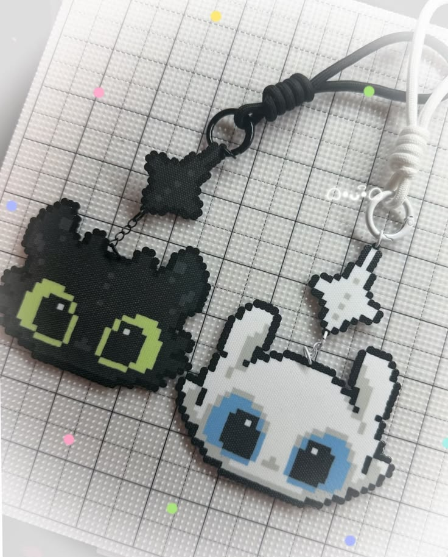
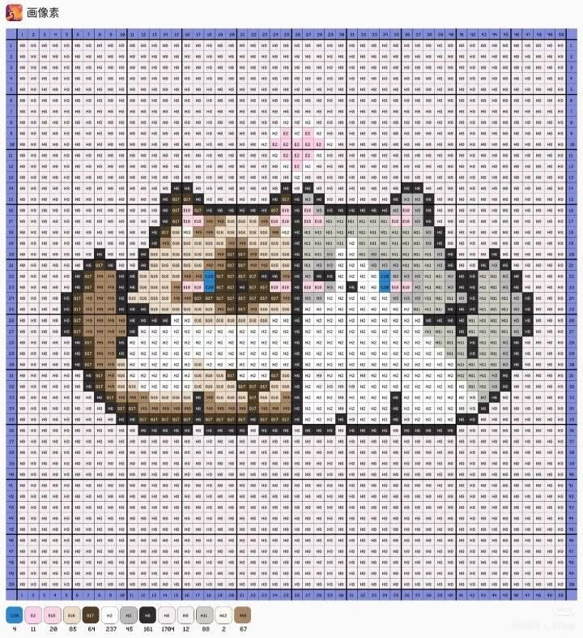
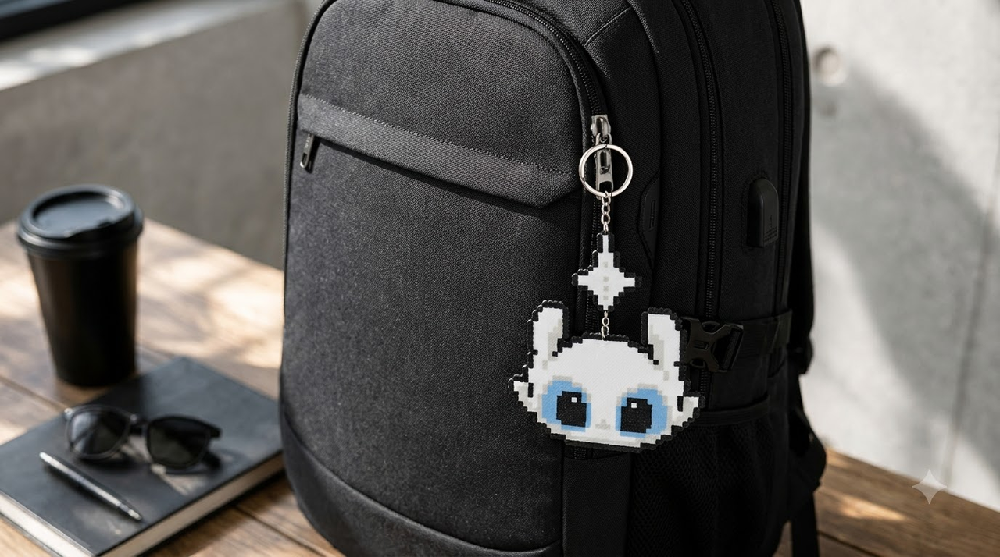
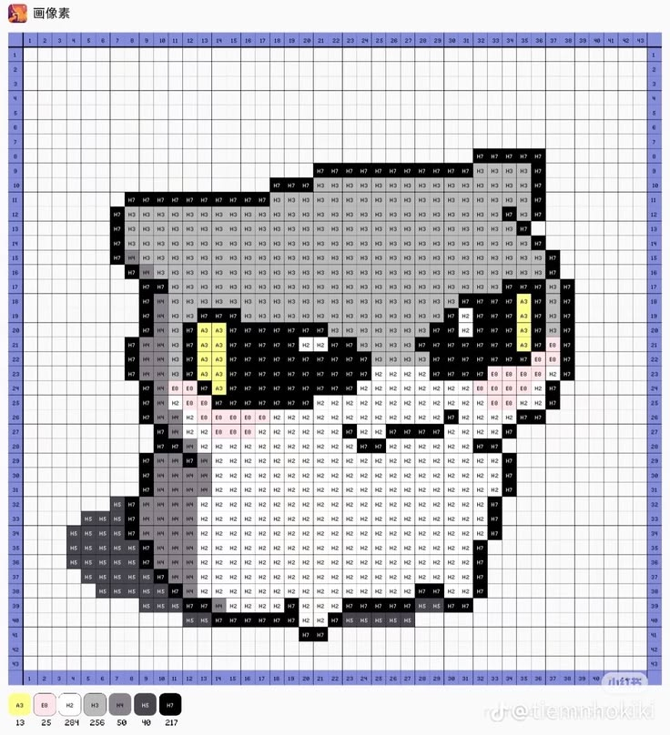
在视窗内滚动阅读；通过文档目录跳到具体章节。
| 同学 | 自己完整负责的部分 | 另承担的整合职责 |
|---|---|---|
| 小明 | 模块一的代码、PPT、讲解材料 | 整合整份作业的 PPT |
| 小红 | 模块二的代码、PPT、讲解材料 | 整合整份作业的程序 |
| 小白 | 模块三的代码、PPT、讲解材料 | 整合讲解材料，负责整体讲解 |
| 关注的内容 | 小明 | 小红 | 小白 | 共同 方案 |
|---|---|---|---|---|
| 截止时间 | ||||
| PPT 版式 | — | — | ||
| 程序整合 | — | — | ||
| 讲解衔接 | — | — |
| 材料编号 | 材料名称 | 提交人 | 所属项目 | 状态 |
|---|---|---|---|---|
| M001 | 活动方案 | 小王 | 迎新活动 | 待审核 |
| M002 | 预算清单 | 小李 | 迎新活动 | 已审核 |
| M003 | 会议记录 | 小王 | 读书会 | 待审核 |
## 阅读论文/博客的标准流程 我需要你帮我阅读以下技术博客，请按以下步骤执行： 链接： 核心需求： ### 第一步：逐个获取总结 对每个子链接，请： 1. 访问该链接 2. 用 2-3 句话总结核心内容 3. 标注文章类型（教程/论文/工具介绍/观点等） ### 第二步：给出综述 在所有子链接都完成后，请给出一个整体综述： - 这些内容覆盖了哪些主题 - 哪些内容是核心必读 - 推荐的阅读顺序 ### 第三步：深入阅读 1. 按章节详细阅读 2. 提取关键方法、实验结果 3. 记录核心用法 --- ### 注意事项 - 始终使用中文回复 - 每个总结不超过 3 句话 - 先执行完整流程，除非用户明确要求直接读某个具体链接 - 如果无法访问请明确无法访问的链接 - 注意每一批链接请围绕用户所需要的核心需求去进行整理
给刚开始学搭配的你
把喜欢的衣服，穿成舒服的一身
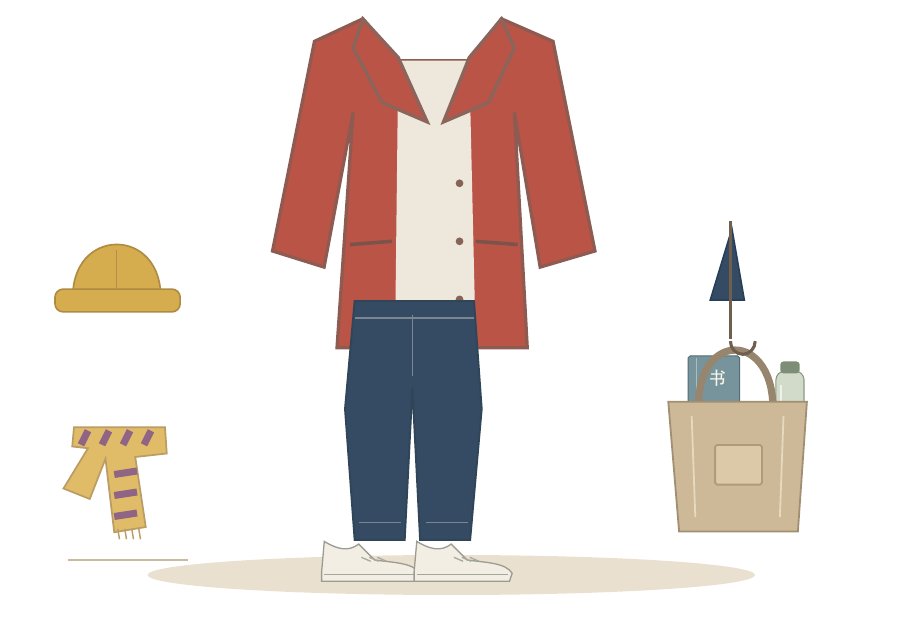
跟着小林准备一次出门，再用自己衣柜里的衣服试一试。
周六，小林准备和朋友逛书店。要走一段路，带书和水杯，傍晚才回家。衣柜里有许多喜欢的衣服，小林想搭一身，穿着开心，也方便过好这一天。
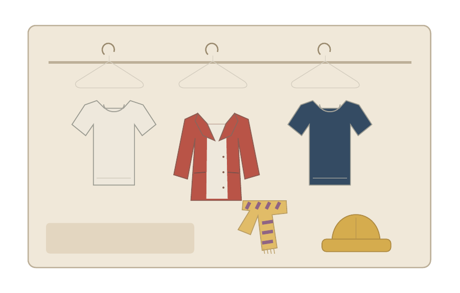
从今天怎么过开始，再看看颜色、花纹和厚薄怎么相处。穿上试一试，最后照顾到背包、穿脱和拿取这些小动作。
书里的几种搭法，都可以用自己已有的衣服试。哪一身值得留下，要看你穿上后的感受。
周六，小林要和朋友逛书店。要走一段路，带书和水杯，傍晚才回家。
把这几件事想清楚，选择就有了方向：鞋要能走路，包要装得下东西，衣服也要适合待上一整天。
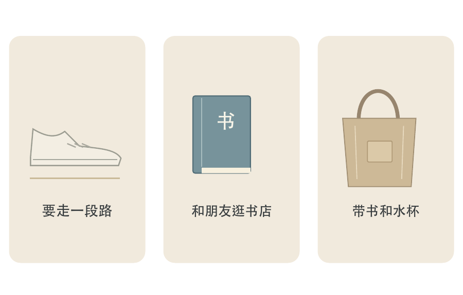
试着想一次真实出门：会坐多久、走多久、带什么？先从这些小事决定今天需要哪些衣服。
先想今天怎么过，再决定穿什么。
试试看：想想今天最久的一段活动：这身衣服能陪你做完吗？
同一件外套，小林穿着松快，朋友却觉得抬手有点紧。朋友很喜欢的厚围巾，小林戴久了又嫌热。
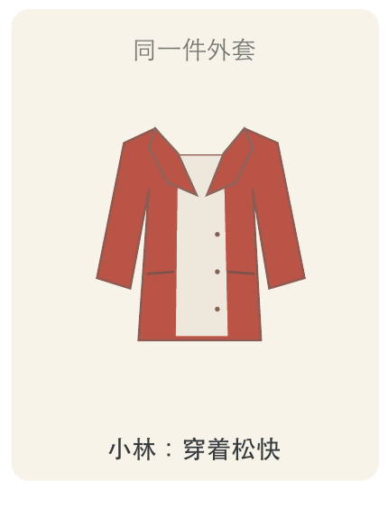
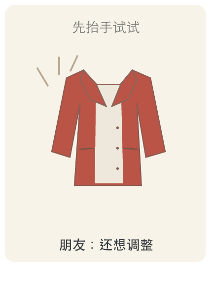
小林不再只问“别人穿得好不好看”，也看自己的感受：会不会总想拉衣领、脱外套，或停下来调整。
试试坐下、伸手和走动。哪种穿法让自己自在，穿过才知道。
别人的好看可以参考，自己的感受也要算进去。
试试看：穿上以后，哪一处让你总想调整？换一种穿法再试。
小林把几件候选衣服拿到一起：上衣、裤子、外套、鞋和包。没打算今天穿的，先留在衣柜里。
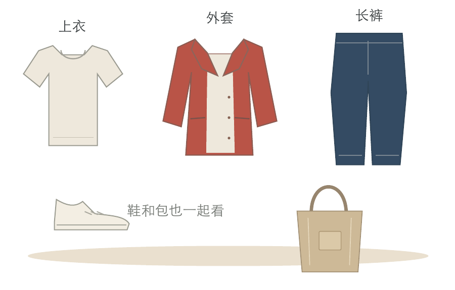
这样看一眼，就知道还缺哪一件，不用每次都从满衣柜里重新找。
你也可以先挑两件候选上衣，和同一条裤子一起试。范围小一点，差别更容易看清。
先挑出候选，再慢慢组合。
试试看：把候选放在一起，今天用得上的都在眼前了吗？
红外套、花围巾和黄帽子一起穿上，小林每样都喜欢，却总在它们之间来回看。
今天最想穿的是红外套。小林先取下帽子和花围巾，里面配简单的上衣，再看看整身。
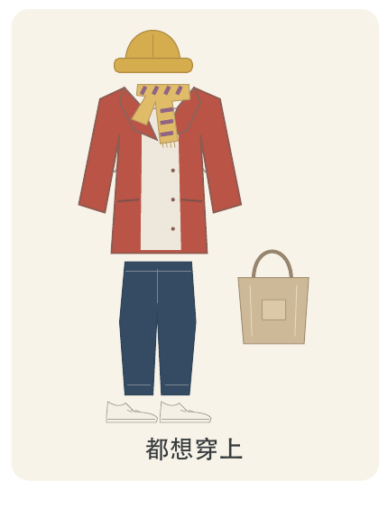
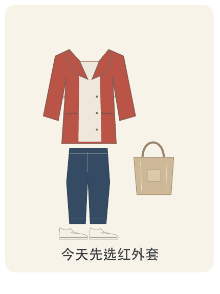
这一次，红外套更显眼了。花围巾留到另一天，配朴素一点的衣服，也可以成为最想让人看见的那件。
先选一件最想穿的，再给它找合适的搭伴。
试试看：站远一点看，第一眼注意到的是你最想穿的那件吗？
小林先用深灰上衣配红外套，又只把上衣换成米白色。外套、裤子和鞋都没动，整身的感觉却变了。
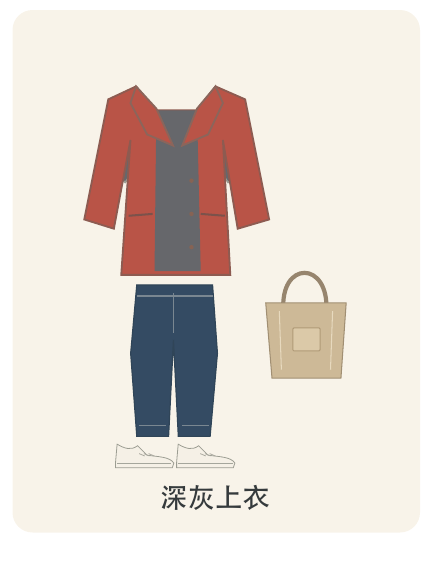
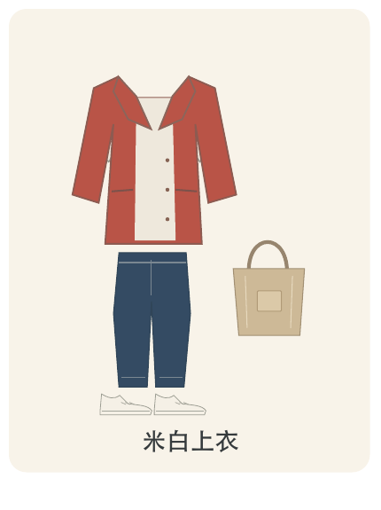
小林这次更喜欢米白色，让整身显得轻快一些。下次想穿得沉静一点，也可能再选深灰。
不用急着背“只能用几种颜色”。把两件衣服并排看，再穿上看，留意自己更喜欢哪一种。
先比较眼前的两种搭法，慢慢积累自己的感觉。
试试看：其他衣服先不换，只换上衣，你更喜欢哪一身？
小林很喜欢花围巾，试着把它配在条纹上衣外面。站远看，两种花纹都很明显，整身有点忙。
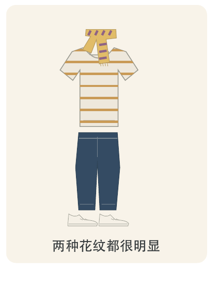
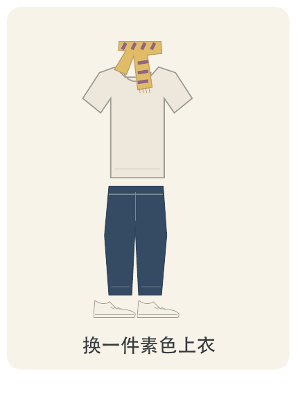
换成没有花纹的上衣，围巾的颜色和图案就清楚多了。
喜欢热闹的搭法也可以继续尝试。拿不准时，先留一个自己最想看的花纹，会更容易决定下一件。
图案多的时候，先试着让其中一件安静下来。
试试看：退后几步看，留下的花纹是不是更容易看清了？
小林把厚毛衣塞进一件偏窄的外套。镜子里看着还行，一抬手却觉得肩膀挤，袖口也堆成一团。
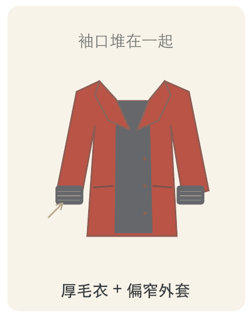
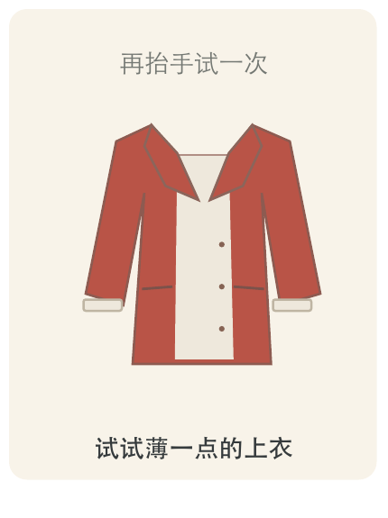
换成薄一点的上衣，或改穿宽松一点的外套，衣领和袖口都好整理多了。
里面和外面要一起试。只看每件衣服各自合不合身，还不足以知道叠着穿是否舒服。
把今天真的会一起穿的几件，放在一起试。
试试看：叠着穿好再抬手，肩膀、衣领和袖口都舒服吗？
小林以前总说想穿得“舒服一点”。这次穿好以后，真的坐下来、抬抬手、走几步，再伸手拿手机。
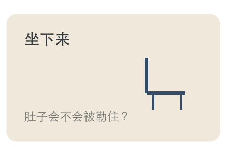
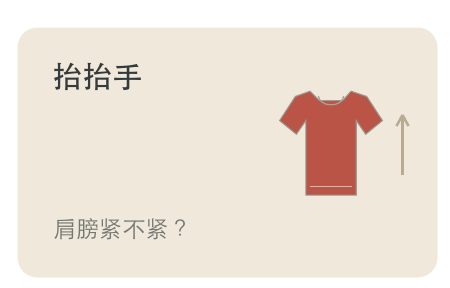
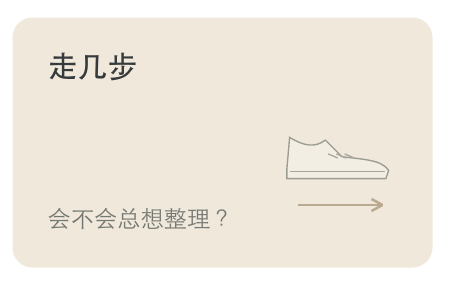
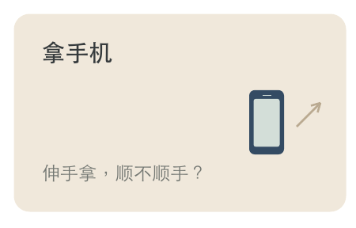
坐下时肚子不被勒住，抬手时肩膀不紧，走路不用一直整理衣服，拿东西也顺手。
这些感受比一句“还不错”具体。下一次挑衣服，小林就更知道要留意哪里。
把“舒服”说到能亲自试出来的小地方。
试试看：挑一个今天真的会做的动作，穿着这一身做一遍。
小林对这一身有点拿不准，差点把外套、鞋和包一起换掉。后来先留下其他衣服，只换了一双鞋。
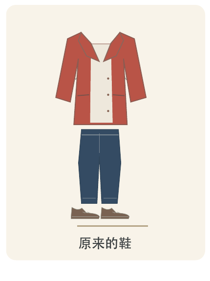
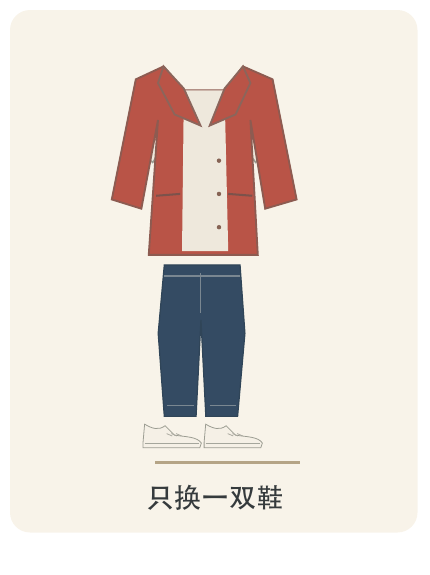
再看镜子，就容易发现这双鞋带来了什么变化。要是不喜欢，换回原来那双也很轻松。
每次先动一处。看清差别以后，再决定要不要继续换下一件。
少改一点，才容易知道哪一步更合心意。
试试看：换过以后，具体是哪一点更喜欢，或更不喜欢了？
试穿时，小林把暂时不选的上衣挂在旁边。换过两件之后，又觉得最开始那件更适合红外套。
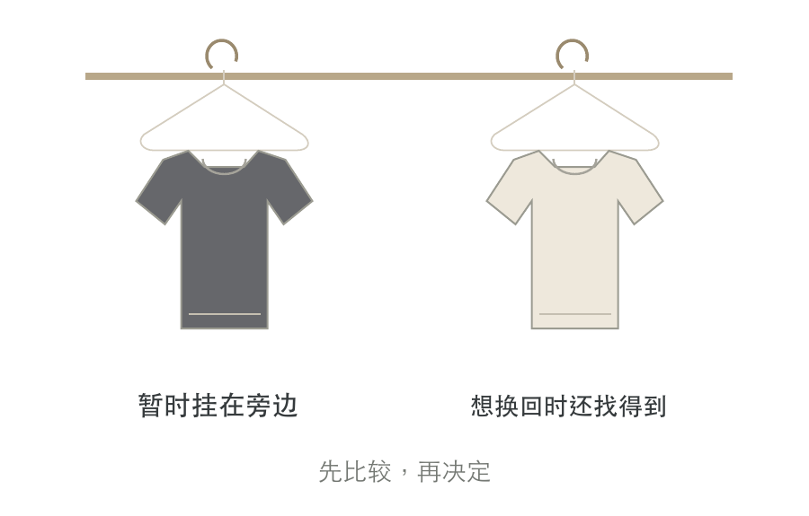
它还在眼前，随手就能换回来。不用重新翻衣柜，也不怕忘记刚才是哪件。
如果试的组合比较多，可以拍张照片，再继续试下一身。
留一点回头比较的余地，不必一次就选定。
试试看：想回头再试时，刚才那件还能马上拿到吗？
红外套是小林今天最想穿的颜色，出门时也能挡一点风。长裤方便坐下，鞋子适合走路，包里放书和水杯。
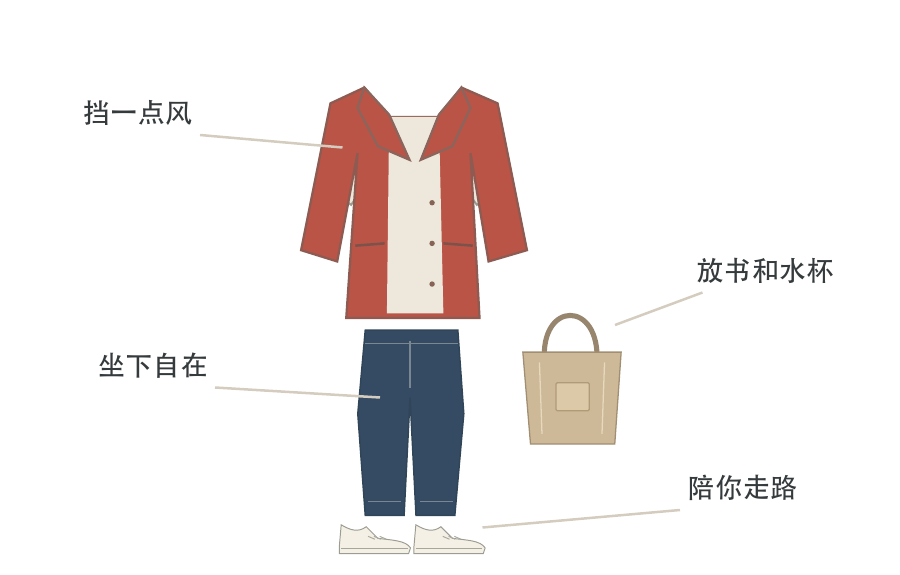
一件衣服可以有好几个用处。把整身放在一起想，才看得出今天的需要有没有被照顾到。
如果为了拎一个好看的小包，书和水杯只能一直拿在手里，小林就会再想想要不要换。
看整身时，也问问今天要做的事方不方便。
试试看：想一遍今天的活动，还有哪件事做起来不方便？
围巾系好了，包也背上了，小林才发现：围巾的一端被肩带压住，想摘下来有点费劲。
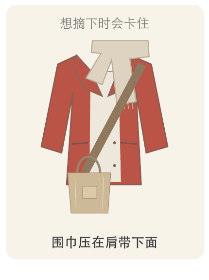
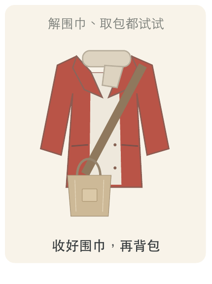
把围巾收好一点，再调整肩带的位置，拿包和解围巾都顺手了。
穿好外套再背包，系好围巾再活动。让几件东西真的一起待一会儿，容易发现它们会不会互相绊住。
单件试过以后，别忘了把整套一起试。
试试看：背好包以后，围巾还能轻松解开、外套还能整理吗？
小林把书往绿小包里放，拉链合不上；水杯又只能拿在手里。还没出门，两只手就快占满了。
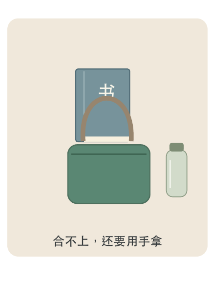
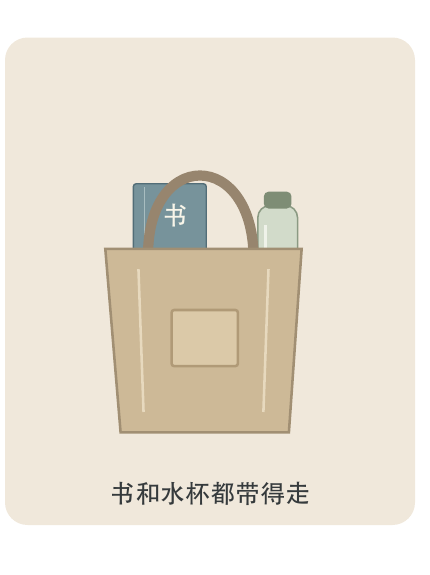
换成布包，书和水杯都有地方放了。背到这一身旁边看看，颜色和大小也合适。
先把今天真的要带的东西装进去，再决定用哪个包。
别只看空包的样子，带上东西再试试。
试试看：装好书和水杯后，还能轻松合上、拿起包吗？
小林试了一件上衣，穿好后挺喜欢，可脱下时总要拽住领口。另一件开襟上衣，穿脱就省事一些。
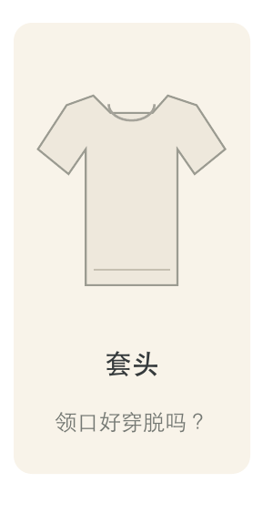
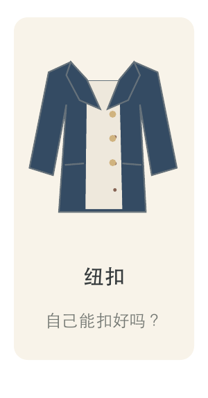
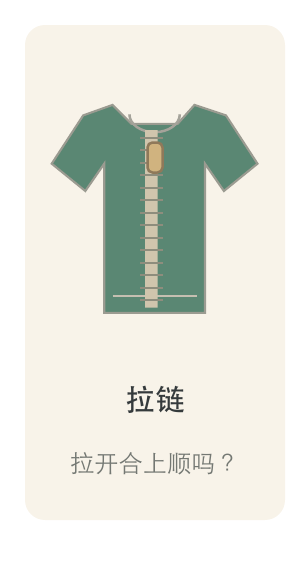
套头、纽扣、拉链，用起来各有不同。试衣时也把扣好、拉开和脱下这几步走一遍。
如果今天会频繁进出室内外，还可以想想：坐下、背着包时，哪种穿法更好整理。
把穿上和脱下都试过，再判断合不合适。
试试看：自己穿上，再脱下来，哪一步还会卡住或费劲？
手机、钥匙都在包里，可每次要用，小林都得把书和水杯翻一遍。东西带齐了，拿起来却不方便。
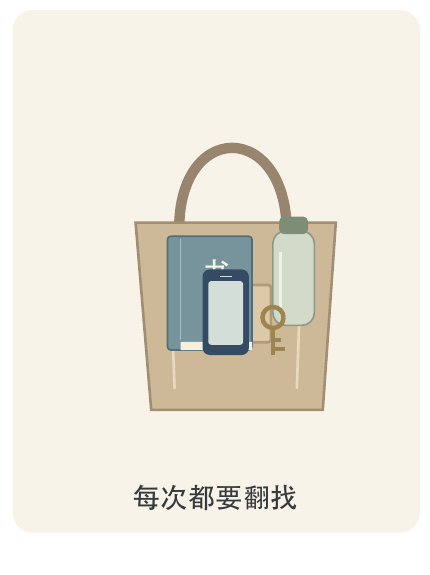
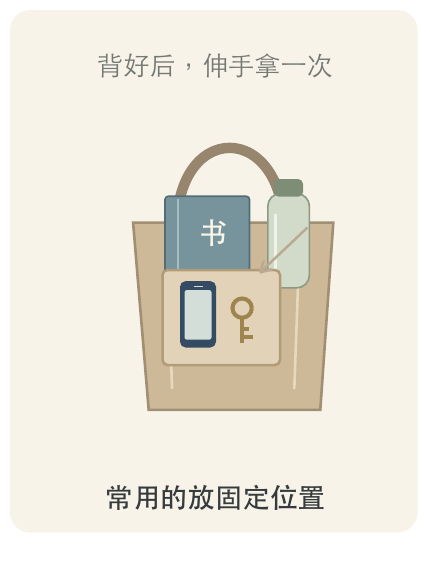
小林把常用的小东西放到固定位置，再背好包，伸手试着拿一次。坐下后，也试试会不会压着、不好取。
放得顺手，还要留意东西会不会滑出来。
按自己真的会用到的动作，试一次拿取。
试试看：站着、坐着各拿一次，顺手吗？东西放得稳吗？
装好东西后，小林先拎着包走了走，又换成背着试。重量、肩带位置和衣服会不会被带着跑，都感受了一遍。
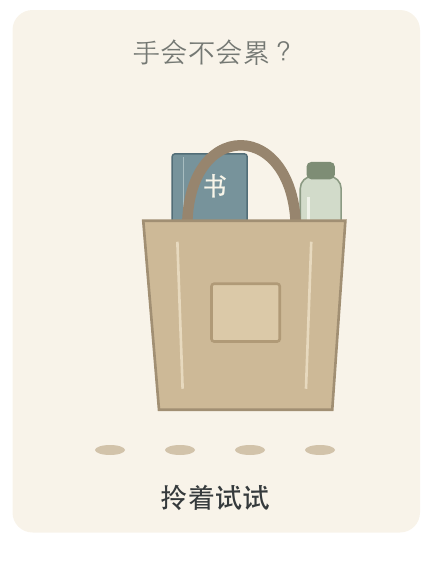
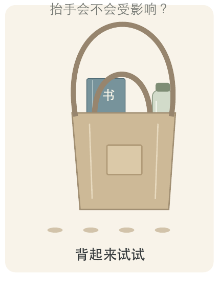
拎着要不要总换手？背着会不会妨碍抬手？哪一种更适合今天的路，试过以后再选。
站在镜子前合适的一身，也要能陪自己走进今天的生活。
穿好、装好、背好，再一起动一动。
试试看：带齐东西走一小段，是否总要调整肩带或换手？
最后，小林留下红外套、米白上衣、深蓝长裤和常穿的鞋，把书与水杯装进布包。临出门想起可能下雨，又多放了一把折伞。
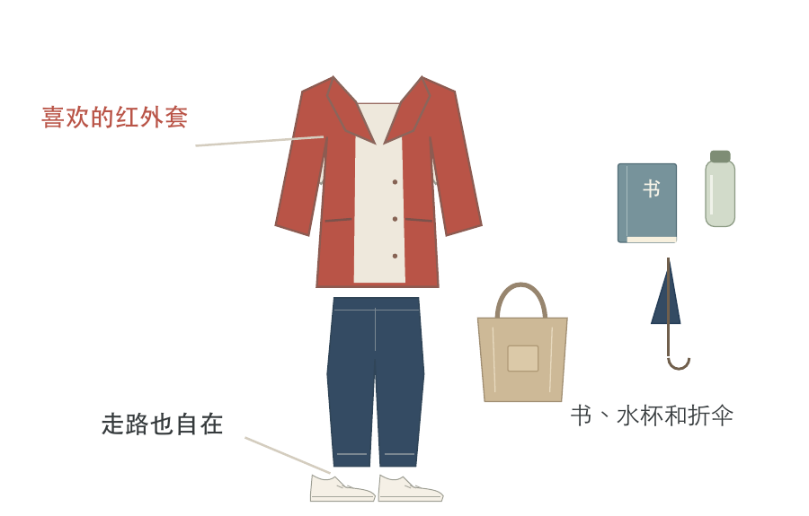
红外套还是今天最喜欢的那件；鞋能走路，东西带得齐，也拿得顺手。花围巾和黄帽子，留到下次再找搭伴。
有自己喜欢的样子，也照顾到了今天的生活。
找一件现在想穿的衣服，为下一次出门搭一身。
慢慢试，留下让自己愿意再穿一次的搭法。
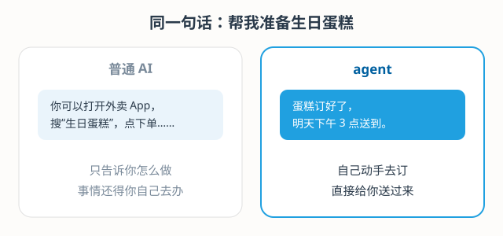
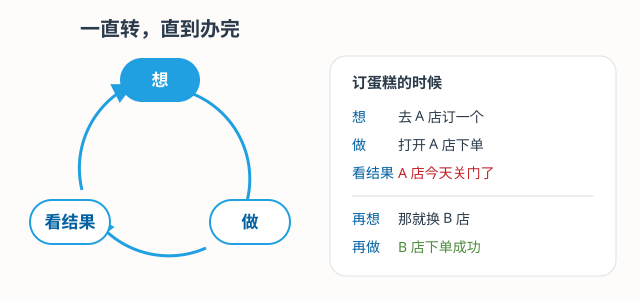
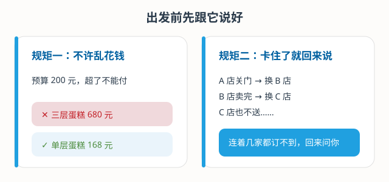
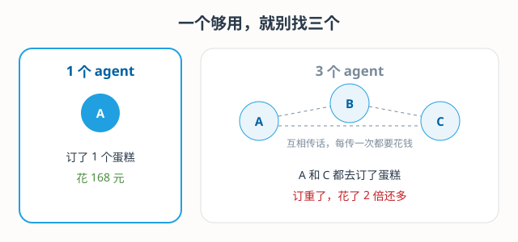